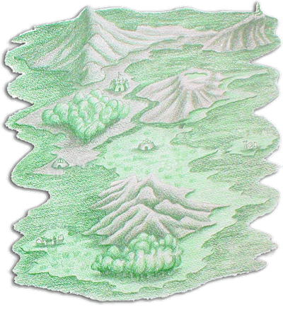

大贤者手札 这是一本从另一个世空而来的古书。当时我正在稀微的烛光下研读法术卷轴时，它是那么突然地，就出现在我眼前的空中，然后掉落在桌面上。我之所以确定它是由另一个时空来的，是因为它的外表是那么地特殊，不像是一般我所看过的书籍，而且上面散发着一层微微的紫光，像是穿梭过无数时空之后，疲累地发出它仅存的力量。而这种说不上来的奇异，正是我从未见过的。 --大贤者 史达奈特 |
罗特帝亚王国史 在『罗特帝亚』王国之中，有一座十分不起眼的图书馆，位于偏远的亚姆山上。从来没有人知道这座图书馆是什么时候建立的，也没有人能够说出建造的人是谁，但是由其破损不堪的外墙判断，可能王国建立之前就已经存在了。在馆内有许多古来的书籍记载，曾经记录着先人的各种事迹。 |
达拉尼亚岛  在『马拉大陆(Mola)之风土人情』这本书里，记载着有关达拉尼亚岛(Dalania)的地理环境：达拉尼亚岛位于马拉大陆的东南方，周围有西雅海(Sia)所环绕。由于地处偏僻，所以这里的人口及经济发展还不如大陆本土那么的繁荣。 达拉尼亚岛的东北角是塔拉山(Tara)，其与海岸的交界是极其险峻的悬崖。山上有座古老的神秘之塔，相传是人类与魔族之外的其他种族所建造的，具有令人难以想象的奥秘，但由于山路崎岖难行，塔的四周又受到莫名的力量所保护，所以至尽仍没有人能一探究竟。 塔拉山的西方，同时也是岛屿西北方的位置，便是亚姆山(Amu)之所在。据说魔族在败退之后，纷纷逃到此地避居，而『罗特帝亚』王国似乎在此处藏有极重大的秘密。 亚姆山的东南方，是蔚蓝无暇的修达海湾(Suda)，风光十分地优美，而岸边不远处，则耸立着一坐巍峨的城堡，这便是『罗特帝亚』王国首都--格菲迪城(Gfaidi)。宏伟的建筑几繁华的街景，正是人类富庶生活的最佳写照。 隔着流入海湾的瓦兹河(Waz)，格菲迪城的东方是山势较为平缓的马拉山(Mara)，而著名的风景名胜『天湖』便在其山顶上的高原处。根据古老的记载，这个湖是天上的流星坠落在此地之后所形成的。 格菲迪城的西南方是浓密不见天日的渥尔森林(Wool)，森林的南方则是海港洛梅特城(Lomait)，这里是达拉尼亚岛与大陆之间的交流中心，除了相当热闹之外，据说也有贩售着一些极罕见的事物及珍品。 岛屿中央是广大的蒙娄平原(Moulu)，这里也是岛上最主要的农牧地区。平原中的卡兰城(Kanai)，正是王国的农业重镇。 在达拉尼亚岛东方的海上，有一座相当荒凉的小岛，叫哥罗库岛(Goloko)。岛上有一座残破的古代遗迹，相传也是建造神秘之塔的种族所留下的。但由于岛的四周有许多暗礁，而且水势湍急，所以除了研究古代文明的学者之外，就连附近的渔夫也不敢随意靠近。 蒙娄平原的南方是高耸的潘达拉山脉(Padara)，由于地势险要，若要从此地通往岛的南端，大都会绕过山脉，沿着其边缘的小道行走。 潘达拉山脉南方是广阔的荷里森林(Holy)，其西方则是杂草茂盛的巴萨平原(Baza)。由于交通的关系，平原上的利达村(Leda)，只有少数的居民在此地作息，而且也极少有外人来访。 |